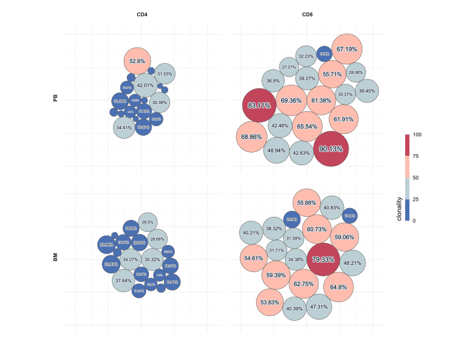

Code
library(data.table)
library(stringr)
library(reactable)
df1 <- fread("../inst/data/clonality1.txt")
reactable(
df1,
theme = reactableTheme(
backgroundColor = "#d9e3f1"
)
)This is an example of a data format containing the necessary information for clonality visualizations. The table includes mock data specifically generated for this purpose.
# libraries -------
library(packcircles)
library(ggplot2)
library(shadowtext)
df1 = df1 |> split(by = c("group1", "group2"))
df_plot = df1 |>
lapply(function(q) {
dat.egg <- q$clonality |>
circleProgressiveLayout() |>
circleLayoutVertices(npoints = 100)
dat.egg <- cbind(dat.egg, q[dat.egg$id])
return(dat.egg)
}) |>
rbindlist()
df_plot$group1 = df_plot$group1 |> str_to_upper()
df_plot_l = df_plot[, by = .(sample, group1, group2, clonality, id), .(
x = ( min(x) + max(x) ) / 2,
y = ( min(y) + max(y) ) / 2
)]
df_plot_l$lbl = df_plot_l$clonality |> round(digits = 2) |> paste0("%")
df_plot |>
ggplot(aes(x, y, group = id)) +
geom_polygon(aes(fill = clonality), color = "grey30", linewidth = .25) +
geom_shadowtext(
data = df_plot_l[which(clonality >= 10)], inherit.aes = FALSE,
aes(x, y, label = lbl, size = clonality),
color = "grey1", bg.color = "#d9e3f1", bg.r = .15
) +
scale_fill_stepsn(
colors = c('#00429d', '#73a2c6', '#ffffe0', '#f4777f', '#93003a'),
limits = c(0, 100),
guide = guide_colorbar(
title.position = "left",
title.theme = element_text(angle = 90, hjust = 0),
barheight = unit(10, "lines"),
barwidth = unit(.5, "lines")
)
) +
scale_size_continuous(guide = "none", range = c(1, 4)) +
facet_grid(rows = vars(group2), cols = vars(group1), switch = "y") +
coord_equal() +
theme_minimal() +
theme(
strip.text.x.top = element_text(face = "bold", margin = margin(b = 10)),
strip.text.y.left = element_text(face = "bold", margin = margin(r = 10)),
axis.title = element_blank(),
axis.text = element_blank(),
panel.spacing = unit(1, "lines"),
panel.grid.major = element_line(linewidth = .35),
panel.grid.minor = element_line(linewidth = .25, linetype = "dashed"),
plot.margin = margin(20, 20, 20, 20),
plot.background = element_rect(fill = "#d9e3f1", color = NA)
)